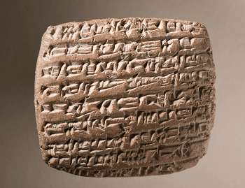
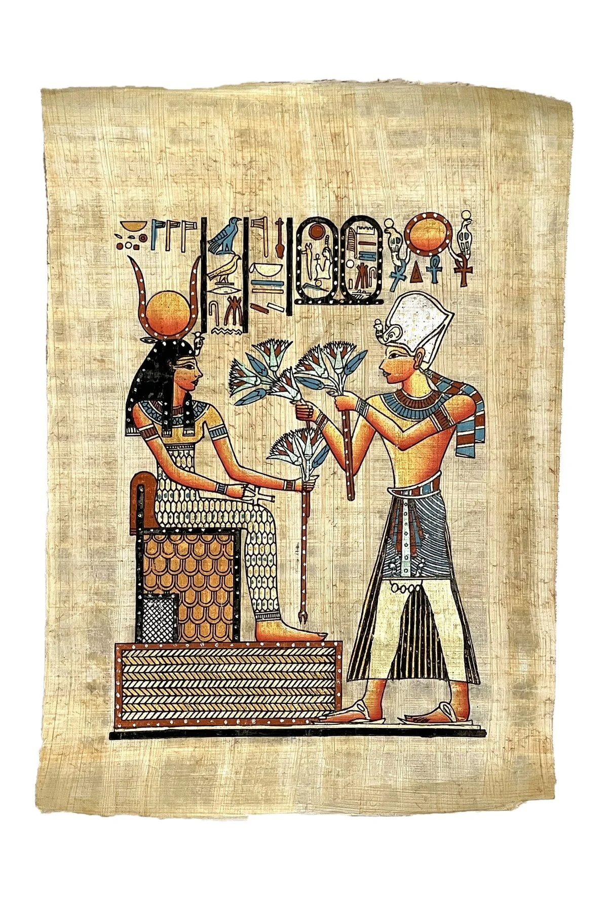
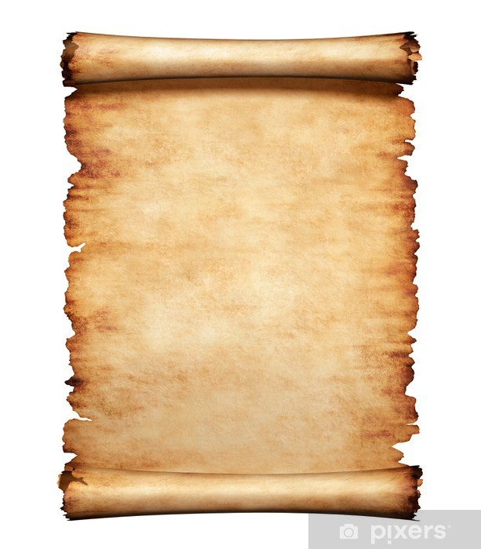
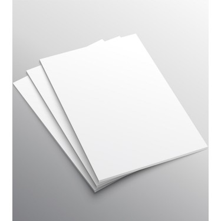

Bilim, Teknoloji ve Toplum
Tarihteki İlk Yazı Örnekleri
- Sümer Çivi Yazısı (MÖ 3200)
- Hiyeroglif Yazı (MÖ 3000)
- Fenike Alfabesi (MÖ 1000)
- Latin Alfabesi (MÖ 750)
Bilginin Kaydedilmesi İçin Kullanılan Araçlar
- Kil Tabletler

- Papirüs

- Parşömen

- Kağıt

İslam Dünyasında Bilim
- Harezmi (Matematik)
- İbni Sina (Tıp)
- Ali Kuşçu (Astronomi)
- Biruni (Fizik, Coğrafya)
- Uluğ Bey (Astronomi)
- Katip Çelebi (Coğrafya, Tarih)
- Hazini (Kimya)
- Cezeri (Mekanik)
- Farabi (Felsefe)
- Piri Reis (Deniz)
- İbni Haldun (Sosyoloji)
Ana Sayfa